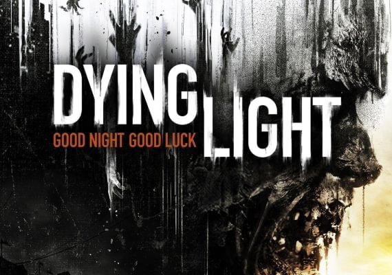

Dying Light
 Utrzymana w konwencji survival horroru gra akcji z widokiem z perspektywy pierwszej osoby (FPP), za
której
powstanie
odpowiada ekipa deweloperska firmy Techland, znanej chociażby z Dead Island oraz serii Call of
Juarez.
Link do strony